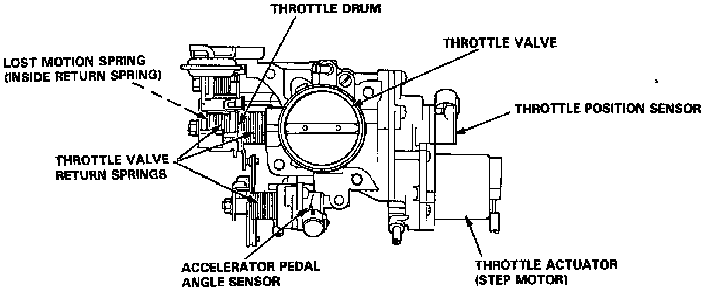
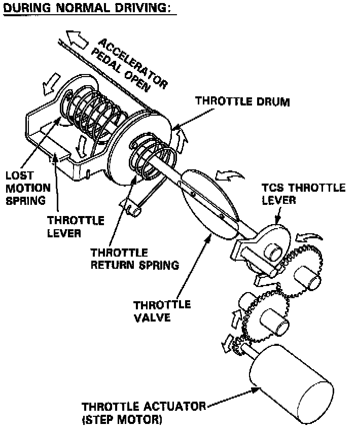
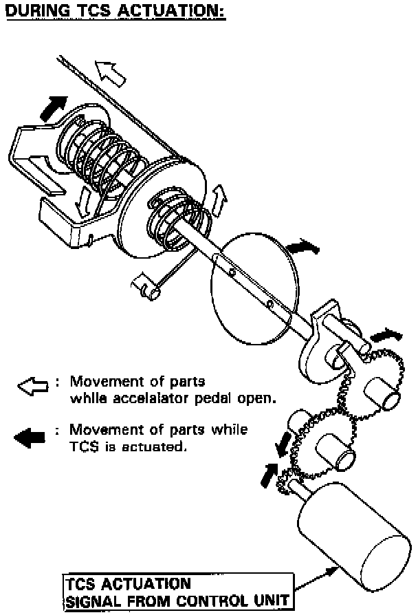

Throttle Body: Description and Operation

PURPOSE/OPERATION
Throttle Body
The throttle body is of the single-barrel side-draft type. The lower portion of the throttle valve is heated by engine coolant which is fed from the cylinder head. The idle adjusting screw which increases/decreases bypass air and the evaporative emission (EVAP) control canister port are located on the top of the throttle body. A throttle valve dashpot is used to slow the throttle valve as it approaches the closed position.


Throttle Actuator
When the traction control system is activated, the control unit signals the throttle actuator, located next to the throttle valve. The throttle actuator is linked to the throttle valve through a series of reduction gears. Although the accelerator pedal position is still within the driver's control, the throttle valve is automatically relaxed to achieve optimum traction.